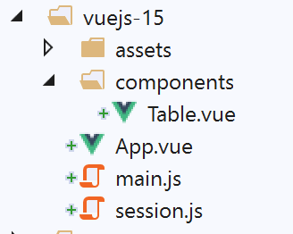

17. 项目 [vuejs-15]：使用插件 [Vuex]
项目 [vuejs-15] 继承了项目 [vuejs-14]，并使用了由 [Vuex] 生成的响应式对象 [session]。该项目的结构如下：

17.1. 安装依赖项 [vuex]

17.2. 脚本 [./session.js]
对象 [session] 变为如下：
// Vuex 插件
import Vue from 'vue'
import Vuex from 'vuex'
Vue.use(Vuex);
// 会话是一个 Vuex 存储
const session = new Vuex.Store({
state: {
// 模拟列表
lignes: []
},
mutations: {
// 生成模拟列表
generateLignes(state) {
// eslint-disable-next-line no-console
console.log("mutation generateLignes");
// 正在初始化 [state.lignes]
state.lignes =
[
{ id: 3, marié: "oui", enfants: 2, salaire: 35000, impôt: 1200 },
{ id: 5, marié: "non", enfants: 2, salaire: 35000, impôt: 1900 },
{ id: 7, marié: "non", enfants: 0, salaire: 30000, impôt: 2000 }
];
// eslint-disable-next-line no-console
console.log(state.lignes);
},
// 删除索引第 n 行
deleteLigne(state, index) {
// eslint-disable-next-line no-console
console.log("mutation deleteLigne");
// 删除第 [index] 行
state.lignes.splice(index, 1);
}
}
});
// 导出对象 [session]
export default session;
注释
- 第 2-4 行：将插件 [Vuex] 集成到框架 [Vue] 中；
- 第 7 行：会话变为 [Vuex.Store] 类型的对象；
- 第8-11行：属性[state]包含应用程序[Vue]的共享状态。该属性对应用程序的所有组件均可见。 此处我们共享了模拟数组 [lignes]（第 10 行）；
- 第12-35行：属性[mutations]汇集了用于修改对象[state]内容的方法；
- 第14-26行：属性[generateLignes]是一个为属性[state.lignes]生成初始值的函数。此处它接受[state]作为参数。 第 18-23 行：属性 [state.lignes] 被初始化；
- 第 28-35 行：属性 [deleteLigne] 是一个函数，用于从数组 [state.lignes] 中删除一行。其参数为：
- [state]，代表第8-11行的对象；
- [index]，即要删除的行号；
- [mutations] 属性的函数始终将第 8 行 [state] 属性的对象作为第一个参数。后续参数由调用该变异操作的代码提供；
- 第 37 行：导出对象 [session]。
与之前的项目 [vuejs-13] 不同，这里我们不会使用插件来通过 [Vue.$session] 属性使会话对组件可见。
17.3. 主脚本 [./main.js]
主脚本的演变如下：
// 导入
import Vue from 'vue'
import App from './App.vue'
// 插件
import BootstrapVue from 'bootstrap-vue'
Vue.use(BootstrapVue);
// Bootstrap
import 'bootstrap/dist/css/bootstrap.css'
import 'bootstrap-vue/dist/bootstrap-vue.css'
// 会话
import session from './session';
// 配置
Vue.config.productionTip = false
// 项目实例化[App]
new Vue({
name: "app",
// Vuex 存储的使用
store: session,
render: h => h(App),
}).$mount('#应用程序
注释
- 第 14 行：导入会话；
- 第23行：会话被传递到主视图中，作为名为[store]的属性（这是强制要求的）。借助插件[Vuex]，该属性随后可通过[Vue.$store]属性供所有组件使用。 因此，当前配置与前一个项目非常相似：此前在组件中通过 [this.$session] 访问会话，现在则通过 [this.$store] 访问；
17.4. 主视图 [App]
主视图 [App] 的变化如下：
<template>
<div class="container">
<b-card>
<!-- 消息 -->
<b-alert show variant="success" align="center">
<h4>[vuejs-14] : utilisation du plugin [Vuex]</h4>
</b-alert>
<!-- 表 HTML -->
<Table />
</b-card>
</div>
</template>
<script>
import Table from "./components/Table";
export default {
// 名称
name: "app",
// 组件
components: {
Table
},
// 生命周期
created() {
// 生成模拟表
this.$store.commit("generateLignes");
}
};
</script>
注释
- 第 9 行：视图 [App] 使用组件 [Table]，但不再接收来自该组件的事件，这是因为存储 [Vuex] 具有响应性；
- 第24-27行：在创建组件[App]之后，立即执行方法[created]。在此方法中，执行名为[generateLignes]的变体，该变体为模拟数组生成初始值。 请注意该语句的特殊语法。需要说明的是，[this.$store] 表示 [main.js] 中实例化视图的 [store] 属性：
// 视图实例化[App]
new Vue({
name: "app",
// Vuex 存储的使用
store: session,
render: h => h(App),
}).$mount('#app')
因此，表示法 [this.$store] 指代对象 [session]。随后编写 [this.$store.commit("generateLignes")] 以执行名为 [generateLignes] 的变体。该变体是一个函数；
17.5. 组件 [Table]
组件 [Table] 的演变过程如下：
<template>
<div>
<!-- 空列表 -->
<template v-if="lignes.length==0">
<b-alert show variant="warning">
<h4>Votre liste de simulations est vide</h4>
</b-alert>
<!-- 刷新按钮-->
<b-button variant="primary" @click="rechargerListe">Recharger la liste</b-button>
</template>
<!-- 非空列表-->
<template v-if="lignes.length!=0">
<b-alert show variant="primary" v-if="lignes.length==0">
<h4>Liste de vos simulations</h4>
</b-alert>
<!-- 模拟表 -->
<b-table striped hover responsive :items="lignes" :fields="fields">
<template v-slot:cell(action)="row">
<b-button variant="link" @click="supprimerLigne(row.index)">Supprimer</b-button>
</template>
</b-table>
</template>
</div>
</template>
<script>
export default {
// 计算结果
computed: {
lignes() {
return this.$store.state.lignes;
}
},
// 内部状态
data() {
return {
fields: [
{ label: "#", key: "id" },
{ label: "Marié", key: "marié" },
{ label: "Nombre d'enfants", key: "enfants" },
{ label: "Salaire", key: "salaire" },
{ label: "Impôt", key: "impôt" },
{ label: "", key: "action" }
]
};
},
// 方法
methods: {
supprimerLigne(index) {
// eslint-disable-next-line
console.log("Table supprimerLigne", index);
// 删除该行
this.$store.commit("deleteLigne", index);
},
// 重新加载显示列表
rechargerListe() {
// eslint-disable-next-line
console.log("Table rechargerListe");
// 重新生成模拟列表
this.$store.commit("generateLignes");
}
}
};
</script>
注释
- 第 1-24 行中的 [template] 保持不变；
- 第 30-32 行：计算属性 [lignes] 现使用 [Vuex] 中的 [store]；
- 第49-54行：要从表HTML中删除一行，需使用[Vuex]生成的[store]的变体[deleteLigne]。 将要删除的行（第53行）的编号[index]作为参数传入；
- 第56-61行：为了用新列表重新加载表HTML，使用[Vuex]生成的[store]的变体[generateLignes]；
17.6. Conclusion
项目 [vuejs-13] 的 [Vue.$session] 属性与项目 [vuejs-15] 的 [Vue.$store] 属性非常相似。它们的目标相同：在视图之间共享信息。 [store]对象的优势在于其具备响应性，而[session]对象则不具备。 但 [vuejs-14] 项目表明，通过在视图的响应式属性中复制 [session] 对象，可以轻松使其具备响应式特性。